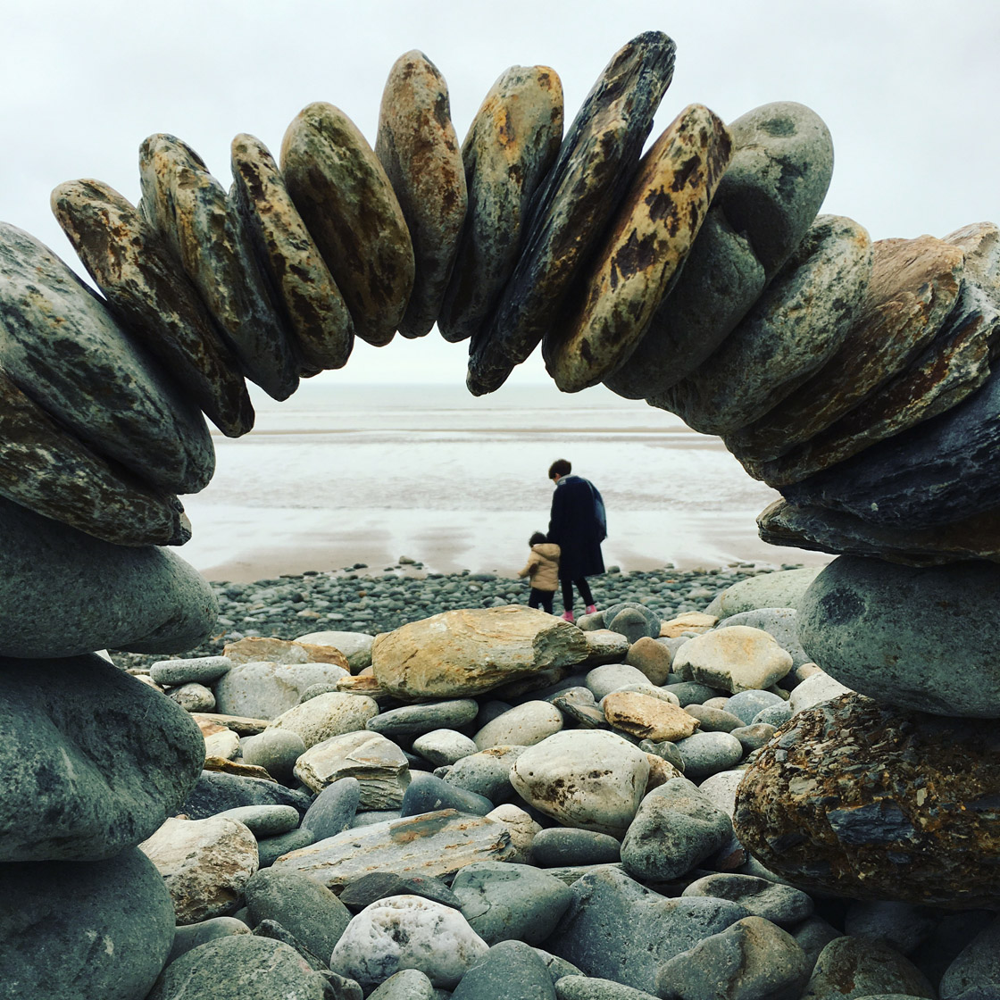
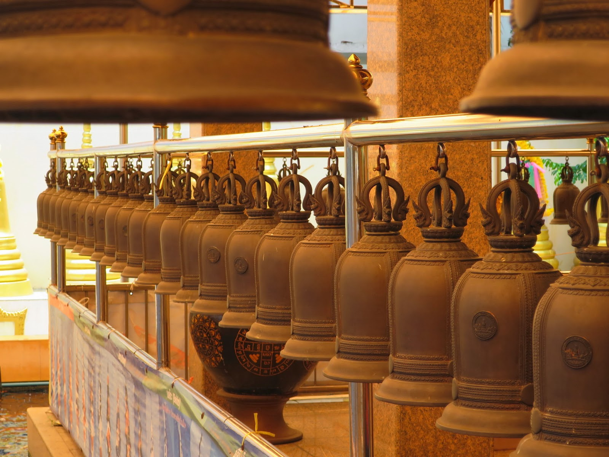
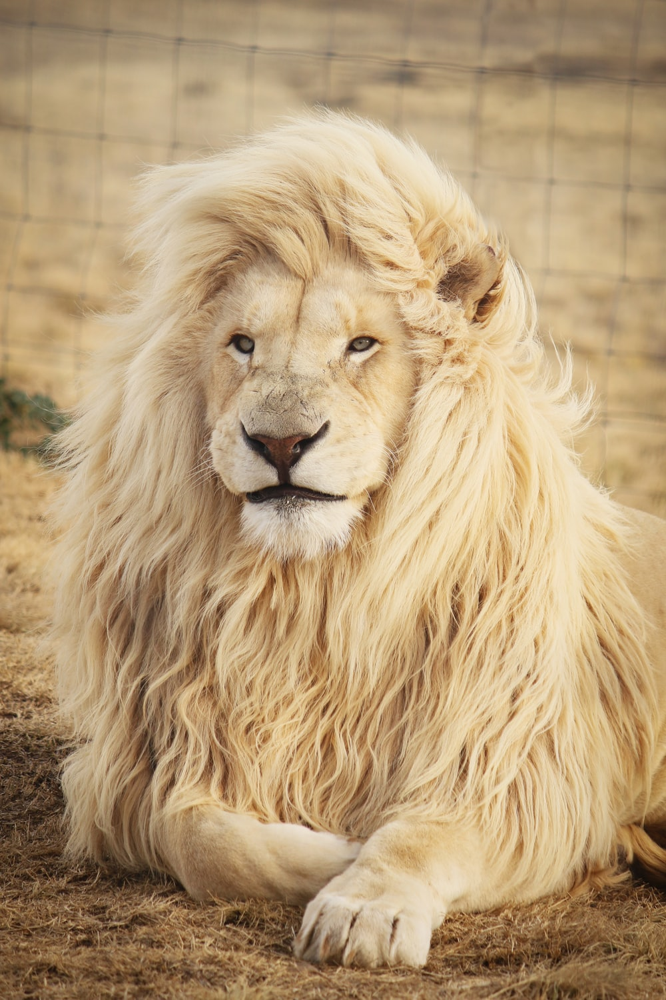
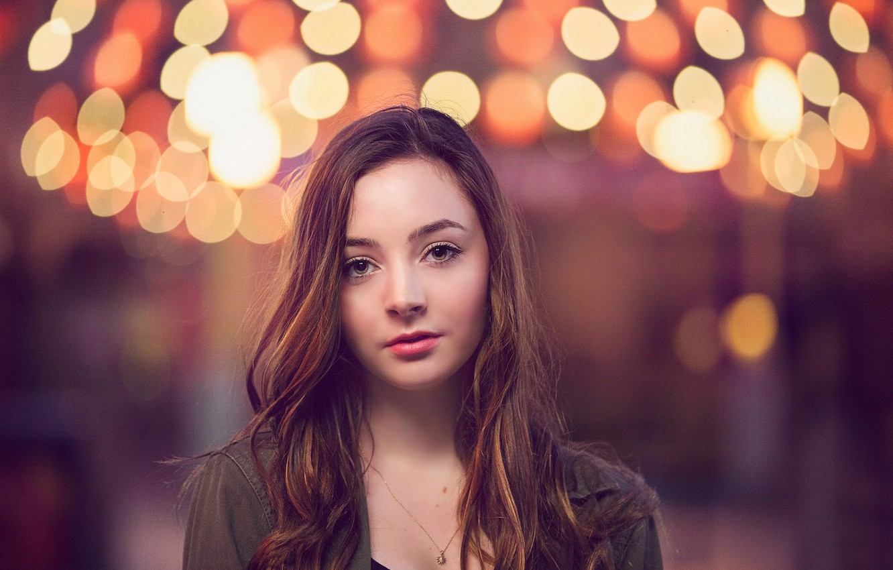
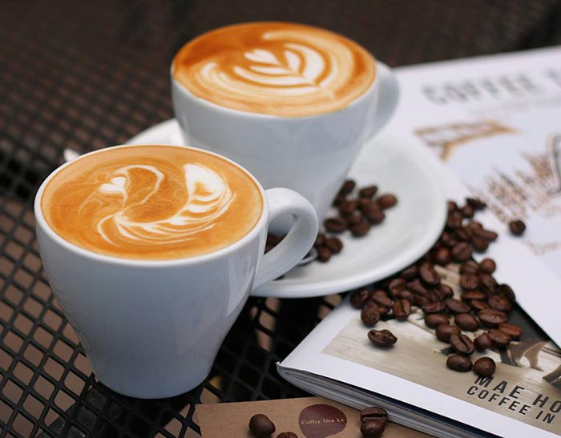

10 เทคนิดการใช้ Adobe Lightroom
10 Oct 2019
Author : Arm Suphakit
1. การใช้ Auto tune ใน Adobe Lightroom ปรับโทนสีเบื้องต้น
การเลือกใช้ Auto tone ใน Lightroom
เป็นเครื่องมือที่ดีจะช่วยไกด์ลักษณะการแต่งภาพในช่วงที่เราคิดไม่ออกว่าควรแต่งแสงให้ออกมาแบบไหน
แม้ว่าเครื่องมือนี้อาจจะไม่ใช่เครื่องมือที่คลิ๊กเดียวแล้วได้ภาพที่ดีที่สุด
แต่ก็เป็นตัวช่วยให้ไอเดียในอีกมุมนึงที่ Adobe Lightroom เลือกปรับให้ ถ้าไม่ชอบก็ลองปรับเพิ่มแค่นั้นเอง
2. Angle Tool ในการปรับภาพให้ตรง
3. Crop Overlays เครื่องมือในการ Crop ภาพพร้อมเส้น Grid หลายแบบในการไกด์การครอปภาพของเรา
เวลาที่เราอยาก Crop ภาพ หรือตัดภาพให้ตรงตามแบบที่เราต้องการ เครื่องมือ Crop นี้มีความพิเศษหลายอย่างมาก ตั้งแต่พื้นฐานคือตัดภาพ, หมุนภาพที่เอียงให้ตรงไปในตัว นอกจากนี้ถ้าเรากดปุ่ม “o” (ปุ่มโอ) จะสามารถเปลี่ยนเส้น Grid ได้ มีหลายแบบมาก และสามารถกุ่ม Shift+o จะทำให้สามารถหมุนเส้น Grid ได้
4. เพิ่มจุดสนใจและโฟกัสของสายตาด้วย Radial Brush
การใช้ Radial Brush สามารถที่จะเลือกปรับ Sharpness -100 ลดความคมของจุดที่เราไม่ต้องการให้โฟกัสออก (จุดที่หลุดโฟกัสอ่ะ) สิ่งนี้จะทำให้ภาพที่ไม่ชัดลดความคมลงไปอีกสำหรับคนที่อยากเพิ่มจุดสนใจให้ภาพ แล้วก็สามารถใช้ Brush นี้เพิ่มความคม (Sharpness) ให้จุดสนใจที่ต้องการเพิ่มได้ด้วย
5. การ Reset เฉพาะค่าที่ต้องการ
เวลาที่เรา Reset ภาพด้วยปุ่มที่มุมขวาล่าง ปกติก็จะรีเซ็ตการแต่งค่าทั้งภาพเลย แต่เมื่อไหร่ที่เราต้องการ Reset เฉพาะค่า ให้เรา Double Click ตรงชื่อของค่านั้น เช่น Exposure ค่าของ Exposure ก็จะกลับมาที่ค่าเริ่มต้นทันทีเพียงค่าเดียว ทำให้เราปรับแต่งค่าทีละจุดได้รวดเร็วขึ้น รีเซ็ตรวดเร็วขึ้น
6. การใช้ปุ่ม Backslash “\” ในการดูภาพ Before และ After สลับกันด้วยปุ่มเดียว

เวลาที่เรา Reset ภาพด้วยปุ่มที่มุมขวาล่าง ปกติก็จะรีเซ็ตการแต่งค่าทั้งภาพเลย แต่เมื่อไหร่ที่เราต้องการ Reset เฉพาะค่า ให้เรา Double Click ตรงชื่อของค่านั้น เช่น Exposure ค่าของ Exposure ก็จะกลับมาที่ค่าเริ่มต้นทันทีเพียงค่าเดียว ทำให้เราปรับแต่งค่าทีละจุดได้รวดเร็วขึ้น รีเซ็ตรวดเร็วขึ้น ทำให้เราเห็นการเปลี่ยนแปลงของภาพแล้วแต่งภาพไปพร้อมกันได้
7. การใช้ Luminance ในการปรับความสว่างสีผิวเน้นความกระจ่างใส

อันนี้เจาะจงเรื่อง Luminance ในการปรับความสว่างของสีผิวด้วย Luminance ลองปรับกับภาพเองดูได้ ซึ่งจะเพิ่มความสว่างให้ส่วนของสีผิวได้ง่าย ๆ ควบคู่ไปกับการปรับ Exposure
8. การคัดลอกโปรไฟล์ที่แต่งไปใช้ในภาพอื่น ลดเวลาการแต่งโทนภาพ

เวลาที่เราแต่งภาพแล้วชอบโทนนี้แล้วอยากใช้กับภาพอื่นเราสามารถ Copy Setting ในการแต่งค่านี้ไปใช้กับภาพอื่นได้ง่าย ๆ ด้วยคีย์ลัด Control + Shift + C ในการเลือกคัดลอก Setting ต่าง ๆ สามารถเลือกค่าที่ต้องการและไม่ต้องการได้ตามอิสระ จากนั้นกด Control + Shift + V ในการวาง Setting นี้กับภาพที่ต้องการ
ที่เหลือถ้าภาพยังไม่ถูกใจก็ปรับเพิ่มโดยที่เรายังได้โทนแบบเดียวกับภาพที่เราไปคัดลอกมา
9. ใช้ Lens Correction ในการแก้ไขจุดบกพร่องบางอย่างของเลนส์ให้มีความสมบูรณ์มากขึ้นด้วยคลิ๊กเดียว แล้วปรับแต่งเพิ่มได้ตามต้องการ
เลนส์ของเราอาจจะมีคาแรคเตอร์บางอย่างที่อาจจะไม่สมบูรณ์ เช่น เลนส์ดูป่อง ๆ ไม่ก็ขอบมืดอะไรแบบนั้น ซึ่ง Adobe Lightroom เขาจะมีโปรไฟล์สำหรับเลนส์ตัวนั้น ๆ อยู่ สามารถที่จะติ๊กเครื่องหมายถูกด้วยคลิ๊กเดียว เขาจะปรับภาพให้เหมาะกับโปรไฟล์เลนส์นั้น เช่น จากขอบมืดก็แก้ขอบมืด จากภาพป่อง ก็แก้ภาพป่อง แล้วเราสามารถปรับเพิ่มได้ตามใจเราอีกด้วย
10. Create Virtual Copy ช่วยก๊อบภาพเดียวกันออกมาเป็นสองภาพ เพื่อแต่งภาพเดียวที่ชอบออกมาในแบบที่ต่างกัน

เวลาที่เราแต่งภาพนึงแล้วเรามีไอเดียหลาย ๆ แบบกับภาพเดียว การ Create Virtual Copy จะทำให้เราโคลนภาพนั้นออกมาแล้วเราสามารถแต่งภาพเดียวกันได้อีกภาพนึงเผื่อบางคนมีไอเดียอยากแต่งหลาย ๆ แบบครับ